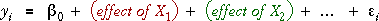
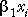
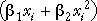
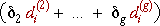

Mixtures of numerical and categorical explanatory variables
We have already examined models with the following types of explanatory variables:
By now, the pattern in such models should be clear. The mean response was modelled as the sum of terms that describe the effects of the individual explanatory variables,

The definition of each effect depends on whether the explanatory variable is numerical or categorical.
 or 

We can use models of this form for any combination of numerical and categorical explanatory variables.
Since the model parameters appear linearly, all models of this form are general linear models (GLMs)
Hypothesis tests
In these models, we are interested in testing whether individual variables can be deleted from the full model. This is simplest when there are only 2-group categorical variables and linear terms for numerical variables in the model since the tests only ask whether a single parameter in the model is zero.
When some categorical explanatory variables have 3 or more distinct categories, this approach does not work since 2 or more parameters should be simultaneously tested.
There are also problems with standard analysis of variance tables since they usually depend on the order of adding the explanatory variables to the model. (The explanatory variables are rarely orthogonal in practice when there are mixtures of explanatory variable types.) Several anova tables would be required to fully analyse the data.
The tests using Type 3 sums of squares are a more general form of the t-tests for individual parameters.
The p-values in the table of Type 3 sums of squares are interpreted in exactly the same way as those in the table of t-statistics for single parameters.
The p-value for a single parameter is identical whether it is tested with a t-test or using its Type 3 sum of squares.
Body fat of AIS athletes
Data were collected from a sample of 202 elite athletes who were in training at the Australian Institute of Sport. We will use these data to model the percentage body fat of the athletes in terms of four numerical explanatory variables, Height, Weight, Red cell count and White cell count, and two categorical explanatory variables, Sex and Sport.
The table below shows the least squares estimates of the coefficients of the numerical explanatory variables and the indicator variables for the categorical explanatory variables. (The '±' values give 95% confidence intervals for them.)
The table of Type 3 sums of squares provides hypothesis tests for whether the six explanatory variables can be deleted from the full model.
Note that this is not an anova table. Since the sums of squares are not sequential, they do not add to the total sum of squares.
The only variables that are not significant (large p-values) are Red cell count and White cell count. Click the checkboxes for these two variables to remove them from the model. The remaining four explanatory variables are all highly significant, so we conclude that body fat is related to all four.
The following interpretation can be made of some of the model parameters: